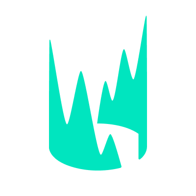
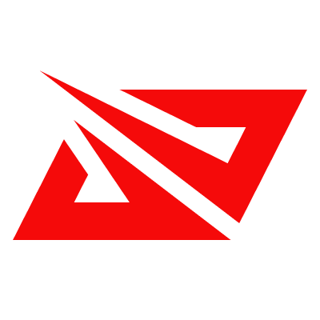
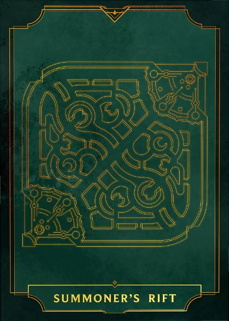
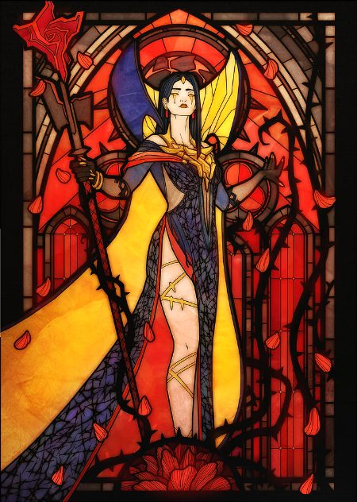
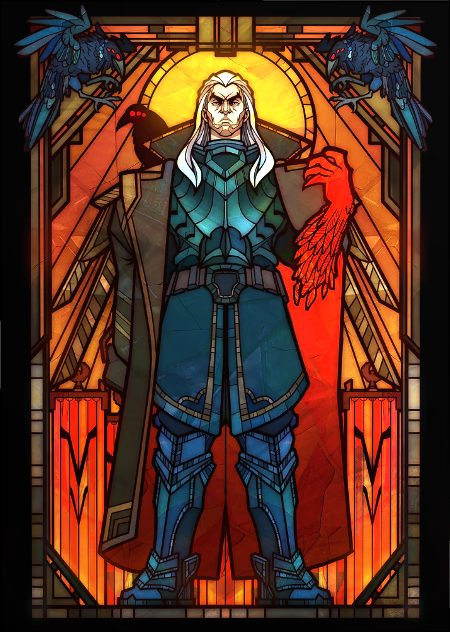
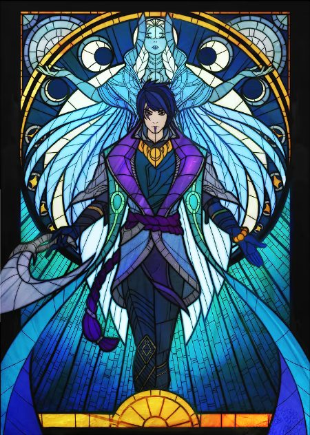
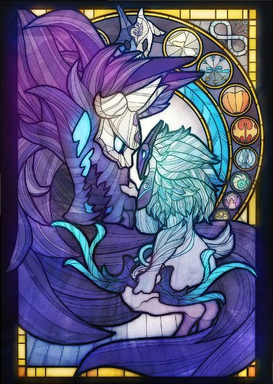
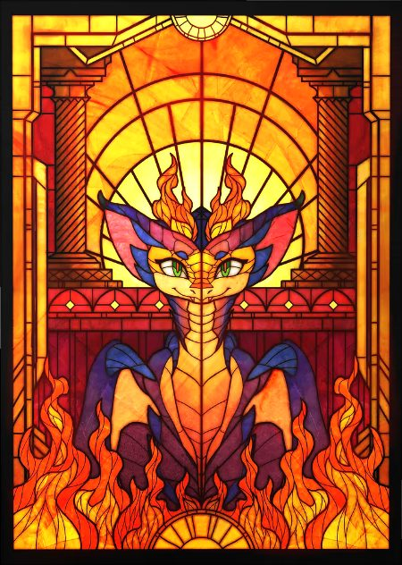
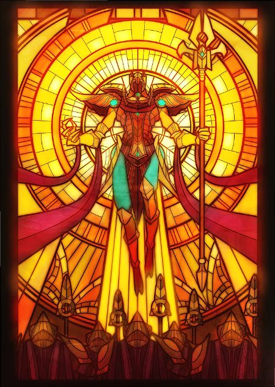
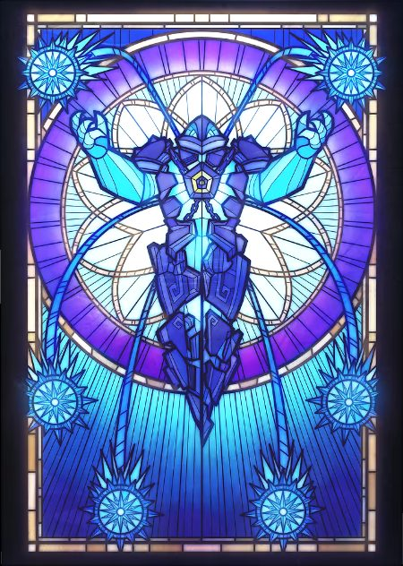

Tout ce que le site propose autour de LoL : les rangs des sages, les Worlds, la Fantasy, les cartes LolMaster, les customs et le patch en cours.
Pour la saison 2027, le Conseil prépare une ligue Fantasy par grande région. Dates et règles annoncées sur l'accueil et sur le Discord.

LECEurope
LPLChine







Site de fan du Conseil des Sages, sans lien avec Riot Games.